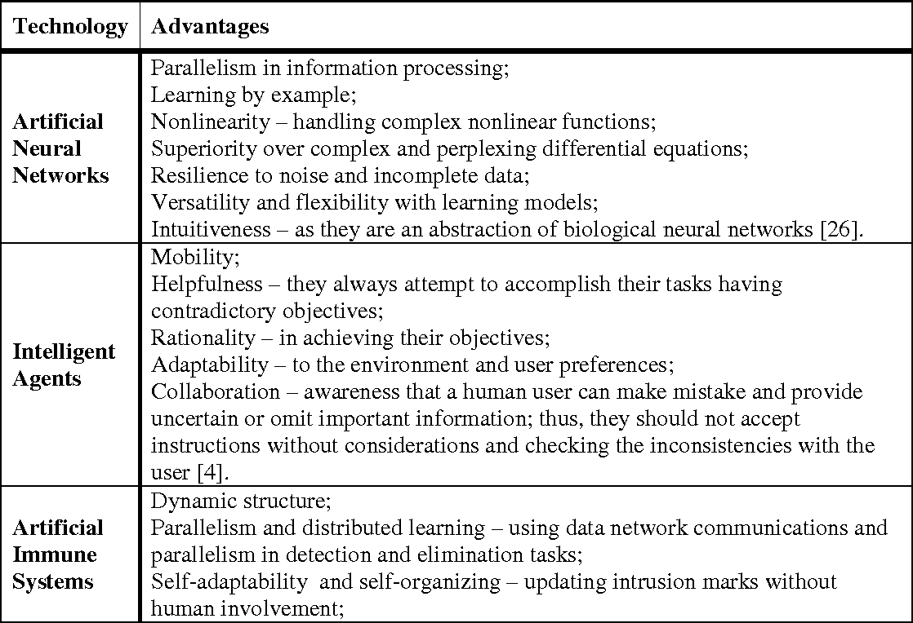

Knowledge and inference
links:
-The basic components of an expert system are a knowledge base, or KB, and an inference engine. The information to be stored in the KB is obtained by interviewing people who are expert in the area in question. The interviewer, or knowledge engineer, organizes the information elicited from the experts into a collection of rules, typically of an “if-then” structure. Rules of this type are called production rules. The inference engine enables the expert system to draw deductions from the rules in the KB. For example, if the KB contains the production rules “if x, then y” and “if y, then z,” the inference engine is able to deduce “if x, then z.” The expert system might then query its user, “Is x true in the situation that we are considering?” If the answer is affirmative, the system will proceed to infer z.
Some expert systems use fuzzy logic. In standard logic there are only two truth values, true and false. This absolute precision makes vague attributes or situations difficult to characterize. (When, precisely, does a thinning head of hair become a bald head?) Often the rules that human experts use contain vague expressions, and so it is useful for an expert system’s inference engine to employ fuzzy logic.
